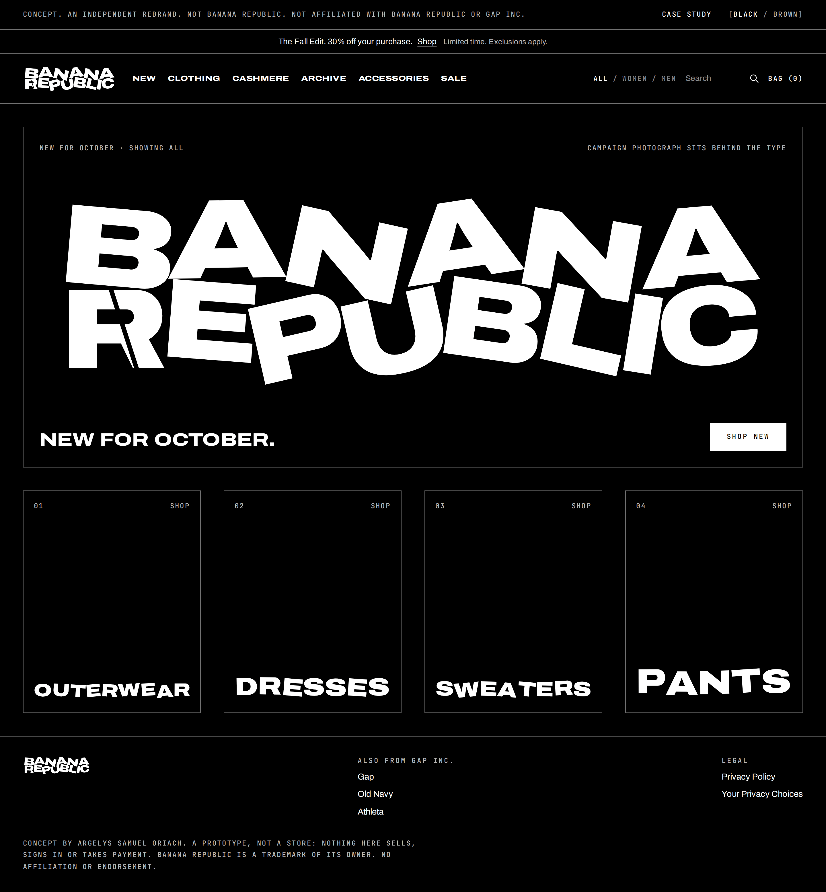
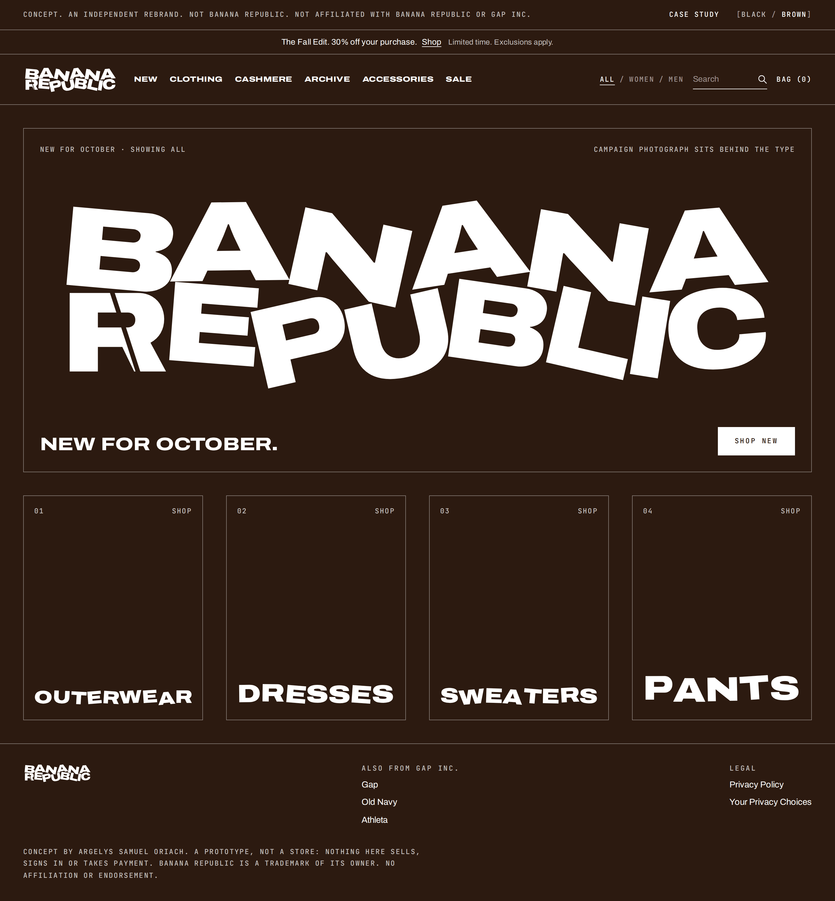
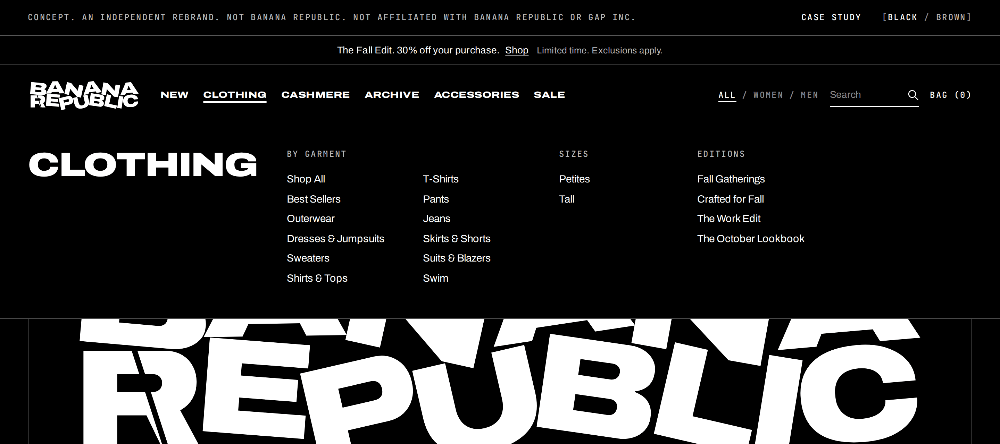
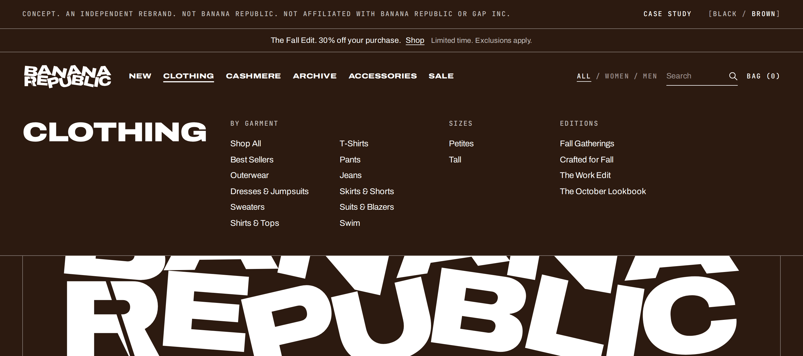
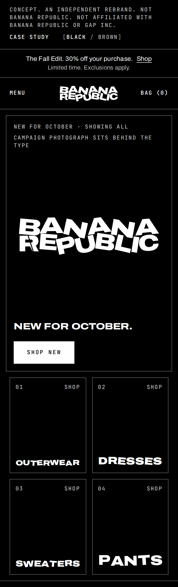
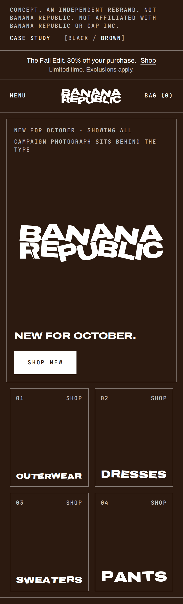
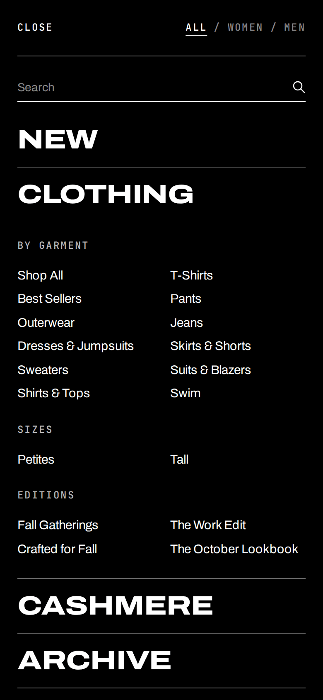
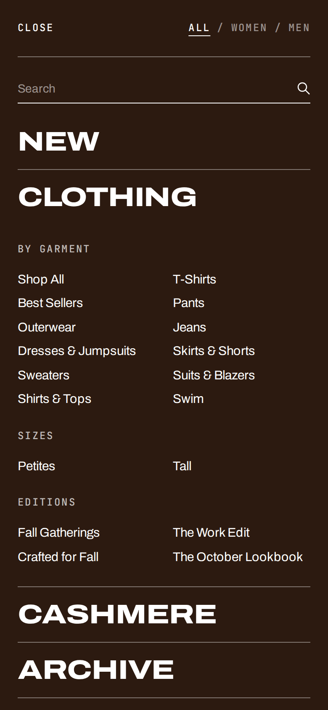

Banana Republic
Rebrand conceptIndependent · Not affiliated with Banana Republic or Gap Inc.Brooklyn, New York · October 2026
01
Name
The name stays.
Concept · Independent · Not a Banana Republic or Gap Inc. project
Banana Republic is a clothing retailer named after an insult. This concept keeps the name and changes what the type carries.
Mel and Patricia Ziegler founded it in 1978 as a travel and safari clothing company. Gap bought it in 1983.
“Banana republic” is a derogatory term for a country that depends on one export and is politically unstable. O. Henry used it in a story from 1904, set in a fictional country based on Honduras, where United States fruit companies held influence.
02
Wayward
Every letter leaves the line.
Wayward is Saidiya Hartman’s word. In Wayward Lives, Beautiful Experiments (2019) she uses it for the unruly, experimental ways Black women and queer people lived in Philadelphia and Harlem around the turn of the twentieth century, outside the discipline demanded of them.
The wordmark takes it as a rule. One typeface, Archivo, at weight 900 and width 125. Two lines justified to the same width. One gap between letters. Then each letter wanders from its place on its own clock. The first and last letters of each line stray least, so the block still has edges.
03
One cut
There is one R in the name. It is cut.
It is the first letter of REPUBLIC.
In October 1937, the Dominican army, on the order of Rafael Trujillo, killed thousands of Haitians and Dominicans of Haitian descent along the border with Haiti. Many were killed with machetes. No one counted. Estimates run from about 14,000 to 40,000.
The killings are known as the Parsley Massacre. Reports say soldiers held up a sprig of parsley and demanded the word perejil, and that failing to trill the R marked a person for death. Historians dispute how often the test was used.
The cut is as wide as the gap between letters. It is the only gap inside a letter. On this page the R trills, in short bursts, and then goes still.
04
In use
05
Homepage
One hero. Gender is a setting.
Concept · Homepage first · Prototype, not a store
The saved copy of the Banana Republic homepage, October 2026, stacks three bands before its first photograph. Its navigation holds 150 links under 96 distinct labels. The difference is repeats: 54 links reuse a label that appears elsewhere in the menu.
The concept keeps what the page has to do: the name, six departments, search, the bag, one offer, one campaign, four ways in. It removes the repeats. Women and Men become a setting you choose once, beside search, instead of a fork you take every time. New arrivals, which sits inside two menus, becomes a department. The sister-brand links move to the footer. The privacy links stay.
The type does the work above the fold. The photographs are left out on purpose; they are the brand’s to commission. Each tile carries one word, justified to the width of the tile, every letter off its line.
| Part | Saved copy | Concept |
|---|---|---|
| Above the first image | Three bands: sister brands and a card offer, the header, a promotion | Two: one promotion, the header |
| Navigation | 150 links, 96 distinct labels. Women and Men each hold a full menu | 48 links. Six departments. Women, Men and All sit beside search |
| New arrivals | The first link inside two menus | A department in the bar |
| First screen | Two equal images and three links | The name, one line, one link, a photograph behind |
| Tiles | Four tiles, seven links | Four tiles, four links |
| Sister brands | Top bar | Footer |
Open the prototypeLinks in the prototype go nowhere.








06
Sources
- Parsley massacreDates, orders, weapons, estimates, and the dispute over the parsley test.
- The ‘Parsley Massacre’ Shows How Quickly a Genocide Can Unfold, The National InterestThe test, and the question of how often it was used.
- Banana republic, BritannicaThe definition.
- Where we got the term “banana republic”, Smithsonian MagazineO. Henry, 1904, and the fruit companies.
- Banana RepublicFounders, 1978, and the 1983 sale to Gap.
- Banana Republic homepage, saved by the author in October 2026Navigation, hero and tile labels, counted from that copy.
- Saidiya Hartman, Wayward Lives, Beautiful Experiments: Intimate Histories of Riotous Black Girls, Troublesome Women, and Queer Radicals. W. W. Norton, 2019.
Independent, speculative work. Banana Republic is a trademark of its owner. No affiliation or endorsement.